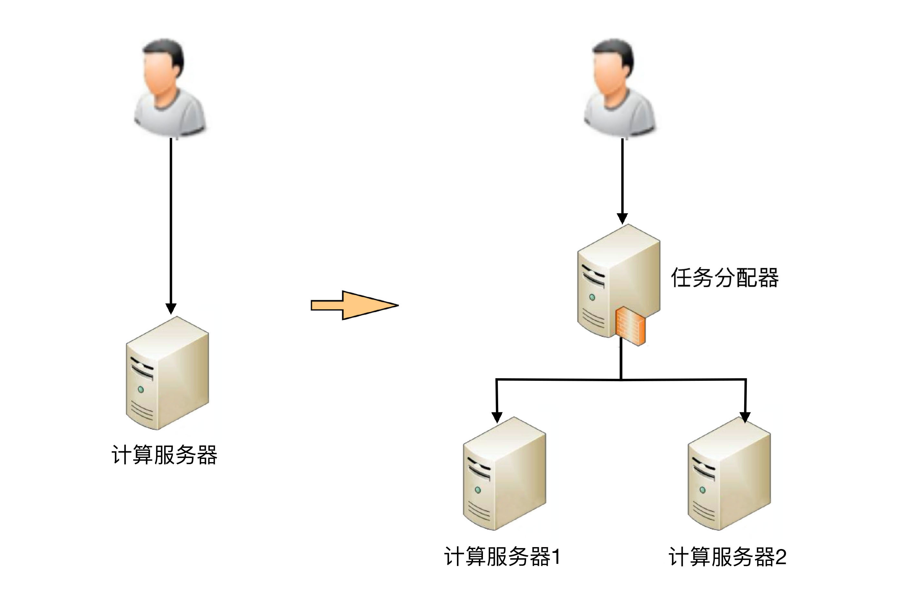

- 00 开篇词 照着做，你也能成为架构师！.md
- 01 架构到底是指什么？.md
- 02 架构设计的历史背景.md
- 03 架构设计的目的.md
- 04 复杂度来源：高性能.md
- 05 复杂度来源：高可用.md
- 06 复杂度来源：可扩展性.md
- 07 复杂度来源：低成本、安全、规模.md
- 08 架构设计三原则.md
- 09 架构设计原则案例.md
- 10 架构设计流程：识别复杂度.md
- 11 架构设计流程：设计备选方案.md
- 12 架构设计流程：评估和选择备选方案.md
- 13 架构设计流程：详细方案设计.md
- 14 高性能数据库集群：读写分离.md
- 15 高性能数据库集群：分库分表.md
- 16 高性能NoSQL.md
- 17 高性能缓存架构.md
- 18 单服务器高性能模式：PPC与TPC.md
- 19 单服务器高性能模式：Reactor与Proactor.md
- 20 高性能负载均衡：分类及架构.md
- 21 高性能负载均衡：算法.md
- 22 想成为架构师，你必须知道CAP理论.md
- 23 想成为架构师，你必须掌握的CAP细节.md
- 24 FMEA方法，排除架构可用性隐患的利器.md
- 25 高可用存储架构：双机架构.md
- 26 高可用存储架构：集群和分区.md
- 27 如何设计计算高可用架构？.md
- 28 业务高可用的保障：异地多活架构.md
- 29 异地多活设计4大技巧.md
- 30 异地多活设计4步走.md
- 31 如何应对接口级的故障？.md
- 32 可扩展架构的基本思想和模式.md
- 33 传统的可扩展架构模式：分层架构和SOA.md
- 34 深入理解微服务架构：银弹 or 焦油坑？.md
- 35 微服务架构最佳实践 - 方法篇.md
- 36 微服务架构最佳实践 - 基础设施篇.md
- 37 微内核架构详解.md
- 38 架构师应该如何判断技术演进的方向？.md
- 39 互联网技术演进的模式.md
- 40 互联网架构模板：存储层技术.md
- 41 互联网架构模板：开发层和服务层技术.md
- 42 互联网架构模板：网络层技术.md
- 43 互联网架构模板：用户层和业务层技术.md
- 44 互联网架构模板：平台技术.md
- 45 架构重构内功心法第一式：有的放矢.md
- 46 架构重构内功心法第二式：合纵连横.md
- 47 架构重构内功心法第三式：运筹帷幄.md
- 48 再谈开源项目：如何选择、使用以及二次开发？.md
- 49 谈谈App架构的演进.md
- 50 架构实战：架构设计文档模板.md
- 51 如何画出优秀的软件系统架构图？.md
- 加餐｜业务架构实战营开营了.md
- 加餐｜单服务器高性能模式性能对比.md
- 加餐｜扒一扒中台皇帝的外衣.md
- 如何高效地学习开源项目 华仔，放学别走！ 第3期.md
- 新书首发 《从零开始学架构》.md
- 架构专栏特别放送 华仔，放学别走！ 第2期.md
- 架构专栏特别放送 华仔，放学别走！第1期.md
- 架构师必读书单 华仔，放学别走！ 第5期.md
- 架构师成长之路 华仔，放学别走！ 第4期.md
- 结束语 坚持，成就你的技术梦想.md
05 复杂度来源：高可用
今天，我们聊聊复杂度的第二个来源高可用。
参考维基百科，先来看看高可用的定义。
系统无中断地执行其功能的能力，代表系统的可用性程度，是进行系统设计时的准则之一。
这个定义的关键在于“无中断”，但恰好难点也在“无中断”上面，因为无论是单个硬件还是单个软件，都不可能做到无中断，硬件会出故障，软件会有bug；硬件会逐渐老化，软件会越来越复杂和庞大……
除了硬件和软件本质上无法做到“无中断”，外部环境导致的不可用更加不可避免、不受控制。例如，断电、水灾、地震，这些事故或者灾难也会导致系统不可用，而且影响程度更加严重，更加难以预测和规避。
所以，系统的高可用方案五花八门，但万变不离其宗，本质上都是通过“冗余”来实现高可用。通俗点来讲，就是一台机器不够就两台，两台不够就四台；一个机房可能断电，那就部署两个机房；一条通道可能故障，那就用两条，两条不够那就用三条（移动、电信、联通一起上）。高可用的“冗余”解决方案，单纯从形式上来看，和之前讲的高性能是一样的，都是通过增加更多机器来达到目的，但其实本质上是有根本区别的：高性能增加机器目的在于“扩展”处理性能；高可用增加机器目的在于“冗余”处理单元。
通过冗余增强了可用性，但同时也带来了复杂性，我会根据不同的应用场景逐一分析。
计算高可用
这里的“计算”指的是业务的逻辑处理。计算有一个特点就是无论在哪台机器上进行计算，同样的算法和输入数据，产出的结果都是一样的，所以将计算从一台机器迁移到另外一台机器，对业务并没有什么影响。既然如此，计算高可用的复杂度体现在哪里呢？我以最简单的单机变双机为例进行分析。先来看一个单机变双机的简单架构示意图。

你可能会发现，这个双机的架构图和上期“高性能”讲到的双机架构图是一样的，因此复杂度也是类似的，具体表现为：
- 需要增加一个任务分配器，选择合适的任务分配器也是一件复杂的事情，需要综合考虑性能、成本、可维护性、可用性等各方面因素。
- 任务分配器和真正的业务服务器之间有连接和交互，需要选择合适的连接方式，并且对连接进行管理。例如，连接建立、连接检测、连接中断后如何处理等。
- 任务分配器需要增加分配算法。例如，常见的双机算法有主备、主主，主备方案又可以细分为冷备、温备、热备。
上面这个示意图只是简单的双机架构，我们再看一个复杂一点的高可用集群架构。

这个高可用集群相比双机来说，分配算法更加复杂，可以是1主3备、2主2备、3主1备、4主0备，具体应该采用哪种方式，需要结合实际业务需求来分析和判断，并不存在某种算法就一定优于另外的算法。例如，ZooKeeper采用的就是1主多备，而Memcached采用的就是全主0备。
存储高可用
对于需要存储数据的系统来说，整个系统的高可用设计关键点和难点就在于“存储高可用”。存储与计算相比，有一个本质上的区别：将数据从一台机器搬到到另一台机器，需要经过线路进行传输。线路传输的速度是毫秒级别，同一机房内部能够做到几毫秒；分布在不同地方的机房，传输耗时需要几十甚至上百毫秒。例如，从广州机房到北京机房，稳定情况下ping延时大约是50ms，不稳定情况下可能达到1s甚至更多。
虽然毫秒对于人来说几乎没有什么感觉，但是对于高可用系统来说，就是本质上的不同，这意味着整个系统在某个时间点上，数据肯定是不一致的。按照“数据+ 逻辑= 业务”这个公式来套的话，数据不一致，即使逻辑一致，最后的业务表现就不一样了。以最经典的银行储蓄业务为例，假设用户的数据存在北京机房，用户存入了1万块钱，然后他查询的时候被路由到了上海机房，北京机房的数据没有同步到上海机房，用户会发现他的余额并没有增加1万块。想象一下，此时用户肯定会背后一凉，马上会怀疑自己的钱被盗了，然后赶紧打客服电话投诉，甚至打110报警，即使最后发现只是因为传输延迟导致的问题，站在用户的角度来说，这个过程的体验肯定很不好。

除了物理上的传输速度限制，传输线路本身也存在可用性问题，传输线路可能中断、可能拥塞、可能异常（错包、丢包），并且传输线路的故障时间一般都特别长，短的十几分钟，长的几个小时都是可能的。例如，2015年支付宝因为光缆被挖断，业务影响超过4个小时；2016年中美海底光缆中断3小时等。在传输线路中断的情况下，就意味着存储无法进行同步，在这段时间内整个系统的数据是不一致的。
综合分析，无论是正常情况下的传输延迟，还是异常情况下的传输中断，都会导致系统的数据在某个时间点或者时间段是不一致的，而数据的不一致又会导致业务问题；但如果完全不做冗余，系统的整体高可用又无法保证，所以存储高可用的难点不在于如何备份数据，而在于如何减少或者规避数据不一致对业务造成的影响。
分布式领域里面有一个著名的CAP定理，从理论上论证了存储高可用的复杂度。也就是说，存储高可用不可能同时满足“一致性、可用性、分区容错性”，最多满足其中两个，这就要求我们在做架构设计时结合业务进行取舍。
高可用状态决策
无论是计算高可用还是存储高可用，其基础都是“状态决策”，即系统需要能够判断当前的状态是正常还是异常，如果出现了异常就要采取行动来保证高可用。如果状态决策本身都是有错误或者有偏差的，那么后续的任何行动和处理无论多么完美也都没有意义和价值。但在具体实践的过程中，恰好存在一个本质的矛盾：通过冗余来实现的高可用系统，状态决策本质上就不可能做到完全正确。下面我基于几种常见的决策方式进行详细分析。
1.独裁式
独裁式决策指的是存在一个独立的决策主体，我们姑且称它为“决策者”，负责收集信息然后进行决策；所有冗余的个体，我们姑且称它为“上报者”，都将状态信息发送给决策者。

独裁式的决策方式不会出现决策混乱的问题，因为只有一个决策者，但问题也正是在于只有一个决策者。当决策者本身故障时，整个系统就无法实现准确的状态决策。如果决策者本身又做一套状态决策，那就陷入一个递归的死循环了。
2.协商式
协商式决策指的是两个独立的个体通过交流信息，然后根据规则进行决策，最常用的协商式决策就是主备决策。

这个架构的基本协商规则可以设计成：
- 2台服务器启动时都是备机。
- 2台服务器建立连接。
- 2台服务器交换状态信息。
- 某1台服务器做出决策，成为主机；另一台服务器继续保持备机身份。
协商式决策的架构不复杂，规则也不复杂，其难点在于，如果两者的信息交换出现问题（比如主备连接中断），此时状态决策应该怎么做。
- 如果备机在连接中断的情况下认为主机故障，那么备机需要升级为主机，但实际上此时主机并没有故障，那么系统就出现了两个主机，这与设计初衷（1主1备）是不符合的。

- 如果备机在连接中断的情况下不认为主机故障，则此时如果主机真的发生故障，那么系统就没有主机了，这同样与设计初衷（1主1备）是不符合的。
- 如果为了规避连接中断对状态决策带来的影响，可以增加更多的连接。例如，双连接、三连接。这样虽然能够降低连接中断对状态带来的影响（注意：只能降低，不能彻底解决），但同时又引入了这几条连接之间信息取舍的问题，即如果不同连接传递的信息不同，应该以哪个连接为准？实际上这也是一个无解的答案，无论以哪个连接为准，在特定场景下都可能存在问题。

综合分析，协商式状态决策在某些场景总是存在一些问题的。
3.民主式
民主式决策指的是多个独立的个体通过投票的方式来进行状态决策。例如，ZooKeeper集群在选举leader时就是采用这种方式。

民主式决策和协商式决策比较类似，其基础都是独立的个体之间交换信息，每个个体做出自己的决策，然后按照“多数取胜”的规则来确定最终的状态。不同点在于民主式决策比协商式决策要复杂得多，ZooKeeper的选举算法ZAB，绝大部分人都看得云里雾里，更不用说用代码来实现这套算法了。
除了算法复杂，民主式决策还有一个固有的缺陷：脑裂。这个词来源于医学，指人体左右大脑半球的连接被切断后，左右脑因为无法交换信息，导致各自做出决策，然后身体受到两个大脑分别控制，会做出各种奇怪的动作。例如：当一个脑裂患者更衣时，他有时会一只手将裤子拉起，另一只手却将裤子往下脱。脑裂的根本原因是，原来统一的集群因为连接中断，造成了两个独立分隔的子集群，每个子集群单独进行选举，于是选出了2个主机，相当于人体有两个大脑了。

从图中可以看到，正常状态的时候，节点5作为主节点，其他节点作为备节点；当连接发生故障时，节点1、节点2、节点3形成了一个子集群，节点4、节点5形成了另外一个子集群，这两个子集群的连接已经中断，无法进行信息交换。按照民主决策的规则和算法，两个子集群分别选出了节点2和节点5作为主节点，此时整个系统就出现了两个主节点。这个状态违背了系统设计的初衷，两个主节点会各自做出自己的决策，整个系统的状态就混乱了。
为了解决脑裂问题，民主式决策的系统一般都采用“投票节点数必须超过系统总节点数一半”规则来处理。如图中那种情况，节点4和节点5形成的子集群总节点数只有2个，没有达到总节点数5个的一半，因此这个子集群不会进行选举。这种方式虽然解决了脑裂问题，但同时降低了系统整体的可用性，即如果系统不是因为脑裂问题导致投票节点数过少，而真的是因为节点故障（例如，节点1、节点2、节点3真的发生了故障），此时系统也不会选出主节点，整个系统就相当于宕机了，尽管此时还有节点4和节点5是正常的。
综合分析，无论采取什么样的方案，状态决策都不可能做到任何场景下都没有问题，但完全不做高可用方案又会产生更大的问题，如何选取适合系统的高可用方案，也是一个复杂的分析、判断和选择的过程。
小结
今天我给你讲了复杂度来源之一的高可用，分析了计算高可用和存储高可用两个场景，给出了几种高可用状态决策方式，希望对你有所帮助。
这就是今天的全部内容，留一道思考题给你吧。高性能和高可用是很多系统的核心复杂度，你认为哪个会更复杂一些？理由是什么？
© 2019 - 2023 Liangliang Lee. Powered by Vert.x and hexo-theme-book.